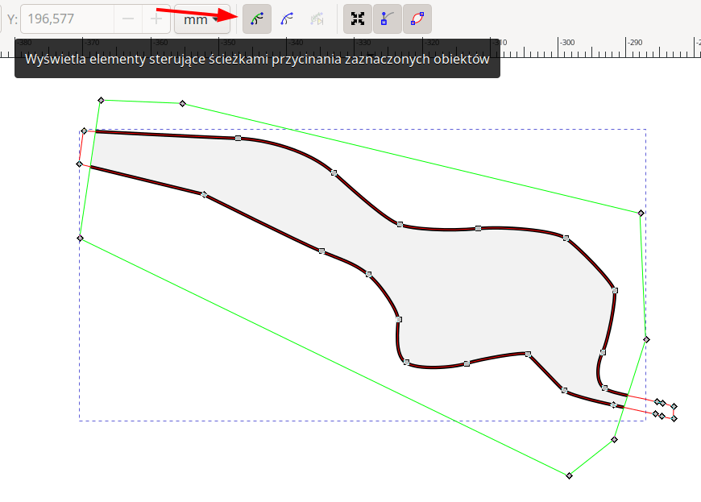

Aktualizacja: grudzień 2023. Dotyczy Inkscape v1.3.
Dlaczego tak? Plik wzorcowy zawiera kilka przydatnych definicji: kształty symboli, desenie wypełnień (np. kamienie, śnieg) oraz symbole liniowe (próg, okap). Oczywiście możesz za każdym razem rysować te elementy od nowa, ale po co? Lepiej skorzystać z ,,gotowca''!

Ja zaczynam zawsze od wczytania ciągu pomiarowego. Dostosowuję do niego wielkość strony i umieszczam go w odpowiednim miejscu (tak, aby zachować odległość do marginesów strony). Ciąg pomiarowy stanowi mój punkt odniesienia - to właśnie on nadaje skalę i orientację na północ. Jego stała obecność podczas pracy nad rysunkiem robi różnicę pomiędzy takim tam mazaniem po ekranie, a tworzeniem prawdziwego planu. Całą moją pracę nad planem dopasowuję do ciągu pomiarowego. Dlatego po imporcie i rozmieszczeniu na stronie, ciągu nie należy nigdy skalować, obracać ani też przesuwać (no chyba, że z wszystkimi innymi odniesionymi do niego obiektami). Pomaga w tym blokowanie warstw
No dobrze, ale jak właściwie wczytać ciąg pomiarowy? Najpierw musisz ze swojego programu do obliczeń jaskiniowych wyeksportować go w formacie, który zaakceptuje Inkscape. Najlepszy jest SVG. Przykładowo, w pakiecie Survex plik SVG można wygenerować z łatwością przy pomocy funkcji Plik / Eksportuj w programie Aven. I teraz uwaga, bardzo ważne! Taki plik otwieramy w Inkscape wcale nie przy pomocy Plik / Otwórz! Zamiast tego, otwórz okno Warstwy / Warstwy i obiekty ..., wybierz warstwę Ciąg pomiarowy (Survey) a następnie użyj funkcji Plik / Importuj! Na pytanie o Rodzaj importu odpowiedz Dodaj obraz SVG jako edytowalny obiekt w bieżącym pliku..
Najpierw trzeba doprowadzić je do formatu rozpoznawanego przez Inkscape - na przykład JPG, PNG lub SVG. A potem, ważne! Podobnie jak ciągu pomiarowego, również i szkicu nie wczytujemy wcale poprzez Plik / Otwórz. Zamiast tego, zaznacz jako aktywną warstwę Sketch (Szkic) użyj Plik / Importuj. Dzięki temu szkic zamiast w nowym oknie, zostanie dołączony do obecnie obrabianego dokumentu.
Szkic, to szkic. Rysunek pomocniczy. Nie jest tak święty, jak ciąg pomiarowy. Można go śmiało doginać, skalować, przesuwać - tak, aby pasował do ciągu. Całkiem możliwe, że Twój ciąg pomiarowy jest skorygowany przez Twój program do obliczeń o deklinację magnetyczną - a szkic nie! Wobec tego nie jest niczym dziwnym, że szkice czasami trzeba delikatnie obrócic, żeby prawidłowo zgrywały się z ciągiem pomiarowym.
Szczerze mówiąc, nie ma to aż takiego znaczenia. Na pewno z warstw warto korzystać. Trzeba znaleźć w tym złoty środek. Czy jeziorka powinny być na osobnej warstwie? A kreski i strzałki oznaczająca płaszczyznę przekroju poprzecznego i kierunek patrzenia? Zarówno za mało warstw, jak i za dużo warstw prowadzi do bałaganu - różnica jest tylko w tym, w którym momencie ten bałagan zemści się koniecznością wykonania dodatkowej, bezsensownej pracy.
Jeśli chcesz skorzystać z moich doświadczeń, to możesz spróbować zacząć od układu warstw zdefiniowanego w pliku wzorcowym, który mi się dobrze sprawdza. Możesz też uznać, że na początek jest tego trochę za dużo - nie będę tym zdziwiony. Moim zdaniem absolutne minimum to: Obrys, Szczegóły, Ciąg pomiarowy, Szkic.
Skoro już jesteśmy przy warstwach: przez pierwsze kilkadziesiąt godzin pracy z programem każdy notorycznie wstawia obiekty nie na te warstwy. Na pewno warto znać takie dwie funkcje Inkscape, którymi można łatwo poprawić takie błędy: Edycja / Wklej w miejscu pochodzenia oraz Przenieś na warstwę... - ta druga jest dostępna z menu, które pojawia się po kliknięciu prawym klawiszem na jakimś obiekcie.
Stanowczo nie rysuj odręcznie narzędziem Ołówek. Użyj narzędzia Pióro - czyli tzw. krzywych Bezier. Komputerowy zapis takich krzywych wymaga zazwyczaj dużo mniej informacji niż w przypadku linii odręcznych. W przypadku obróbki grafiki zawierającej dużą ilość linii (co jest typowe dla dokumentacji jaskiniowej), to ilosć danych do przetworzenia ma wpływ na płynność działania programu graficznego. Typowo, będzie ona zdecydowanie lepsza dla rysunków wprowadzonych jako krzywe Bezier. Poza tym, krzywe Beizer na ogół skalują się bardziej płynnie (np. jeśli zechcemy powiększyć fragment planu).
Aby narysować taką krzywą w Inkscape, wybieramy narzędzie Pióro (skrót klawiszowy B), oraz wskazujemy myszką kolejne punkty (tzw. węzły), które mają definiować krzywą. Pojedyncze kliknięcie lewym klawiszem w punkt na ekranie powoduje, że linia jest kontyunuowana linią prostą. Kliknięcie i przytrzymanie lewego klawisza myszy umożliwia wygięcie linii w krzywą.
Wprowadzanie krzywej zakańczamy wciśnięciem ENTER lub (w przypadku krzywych zamkniętych) kliknięciem w punkt, od którego rozpoczęliśmy rysowanie. Położenie węzłów oraz ich typ tj. linia prosta, krzywa symetryczna (gładkie przejście przez punkt), krzywa asymetryczna (narożnik w punkcie) można dla danej krzywej zmienić w każdej chwili za pomocą narzędzia edycji krzywej (skrót klawiszowy N).
Warto zwrócić uwagę na to, że wybranie narzędzia Pióra (B) w momencie, kiedy na ekranie za pomocą narzędzia wybierania obiektów (S) jest już zaznaczona jakaś krzywa pozwala na łatwe jej kontynuowanie.
Styl linii (grubość) zmienia się za pomocą opcji Obiekt – Wypełnienie i kontur (Shift+Ctrl+F). Linie przerywane wprowadzaj jako jedną krzywą z ustalonym odpowiednim stylem konturu (w opcji Wypełnienie i kontur), a nie jako kilka krzywych ciągłych!
Ja używam: obrys ścian: 0.5 mm, szczegóły spągu i progi 0.28 mm, drobne szczegóły spągu 0.1 mm. Kolor wody (RGBA) 0083d1ff, przezroczystość warstwy z wodą 50%. Dlaczego 0.28 mm? Równie dobrze mogłoby być 0.25 mm, co za róznica. Ale w przypadku gdyby naszła mnie ochota na eksport do pliku rastrowego, zamiast do PDF, to 0.28 mm to dokładnie 1 piksel (przy 90 DPI)!
Na pewno warto znać funkcję Edycja / Wklej / Wklej styl (Ctrl+Shift+V) – dzięki niej można łatwo kopiować style i kolory pomiędzy obiektami. Najpierw skopiuj (Ctrl+C) obiekt, który ma być wzorcem stylu (który ma ustawiony pożądany styl linii czy kolor wypełnienia), następnie zaznacz obiekty które mają wyglądać identycznie i użyj Wklej styl. Dzięki temu trikowi nie trzeba ciągle zaglądać do Wypełnienia i konturu i zastanawiać się nad grubościami.
Użyj funkcji Obiekt / Symbole. Otworzy się paleta symboli, z której możesz przeciągać i upuszczać do dokumentu. Symboli, co do zasady, nie należy skalować. Jeśli wydają się za duże lub za małe, to prawdopodobnie rysujesz Twój plan w nieodpowiedniej skali.
Warto wiedzieć: Przesuwając symbol przy pomocy kursora myszy wciśnij spację (ale nie puszczaj lewego klawisza myszy!). Symbol skopiuje się w miejscu, w którym aktualnie znajduje się kursor myszy. Jest to wygodny sposób, aby wstawić obok siebie kilka symboli. Tylko nie przesadzaj!
Narysuj kreskę, która będzie wyznaczała krawędź progu. Taką zwykłą kreskę - prostą lub krzywą, długą lub krótką, ale bez specjalnych ozdobników. Następnie zaznacz jakiś wcześniej już przygotowany symbol progu. Taki symbol znajdziesz na przykład poza obszarem strony w pliku wzorcowym. Skopiuj go do schowka (Ctrl+C). Wróć do Twojej pierwszej kreski i użyj funkcji: Edycja / Wklej ... / Wklej styl, a następnie - ważne - Ścieżka / Wklej efekt ścieżki. Aby sprawnie wykonywać te dwie operacje, warto nauczyć się skrótów klawiszowych. W moim Inkscape są to: Ctrl+Shift+V oraz Shift+7.
Dokładnie w ten sam sposób możesz wygenerować symbol okapu. Aby odwrócić kierunek progów czy okapów, użyj funkcji Ścieżka – Odwróć mając zaznaczoną linię progu (okapu).
Progi są "symulowane" poprzez efekt "linijki" wbudowany w Inkscape. Możesz wyregulować parametry przy pomocy funkcji Ścieżka / Edytor efektów ścieżki
Narysuj obszar, który ma zostać wypełniony (tak jak każdą inną kreskę - narzędziem Pióro - tylko tyle, że tym razem będzie to krzywa zamknięta). Otwórz Obiekt / Wypełnienie i kontur. W zakładce Wypełnienie wybierz ikonkę podpisaną "Deseń". Spośród wzórów wypełnienia wybierz odpowiadające Ci kamienie. Zwróć uwagę, że do wyboru są dwie różne gęstości kamieni.
Aby zmienić wielkość kamieni, dostosuj wartości w polach Skaluj X i Skaluj Y (... użyj raczej dwóch takich samych wartości!). W zakładce Kontur wyłącz rysowanie konturów.
Dlaczego kamienie są szare? Dobre pytanie. Niestety nie jest to kwestia estetyki. Tylko szare kamienie (bez narysowanych krawędzi) można łatwo skalować. Takie kamienie dobrze też "ucinają" się na brzegu wypełnionego obszaru. Kiedyś rysowałem kamienie z obwódkami, ale doszedłem do wniosku, że taki sposób przedstawiania kamieni jest bardzo pracochłonny. Na pewno należy unikać rysowania każdego kamienia z osobna (oczywiście za wyjątkiem sytuacji, kiedy mamy na myśli bardzo konkretny, charakterystyczny kamień!) - im więcej obiektów w programie graficznym, tym wolniej będzie działał!
Ścieżka – Różnica. Szczególnie przydatna do wycinania wysep w jeziorkach. Po narysowaniu jeziorka (jako zamknięta, wypełniona krzywa) rysujemy wyspę (również jako zamknięta, wypełniona krzywa). Upewniamy się, że wyspa jest „na” jeziorku (w razie konieczności używamy opcji Obiekt – Przesuń w górę lub Obiekt – Przesuń w dół). Zaznaczamy następnie jeziorko i wyspę, i używamy Ścieżka – Różnica.
Obiekt – Wyrównaj i rozmieść – otwiera okno z szeregiem opcji przydanych do budowy siatek czy graficznych skali. Np. rozmieść obiekty w równych odstępach, wyrównaj dolne krawędzie obiektów itd.
Edycja / Klonuj / Utwórz klon - często warto użyć tej opcji zamiast zwykłego Kopiuj & Wklej. Klon obiektu można dowolnie przesuwać, obracać, skalować. Nie można tylko ingerować w środek obiektu - który jest kopiowany dokładnie z oryginału. Ma to jedną bardzo poważną zaletę - jeśli zmienimy oryginał, zmienią się wszystkie klony. Co ważne, kopia klonu jest również klonem (tego samego obiektu) - wobec tego o klonach wystarczy pamiętać tylko przy "pierwszym" kopiowaniu. Klony zawsze można zamienić na samodzielne obiekty (Edycja / Klonuj / Odłącz klon). Wszystkie symbole konwencjonalne wstawione z biblioteki symboli są właśnie takimi klonami. Więcej o zaawansowanym zastosowaniu klonów: w osobnym dokumencie
Skalowanie prostych: warto zwrócić uwagę na to, że obiekty w Inkscape skalują się różnie, w zależności od tego, w którą z ośmiu dostępnych strzałek skalowania się kliknie (cztery w narożnikach, cztery na bokach). Proste wskazujące kierunki przekrojów poprzecznych skaluje się wygodnie zaczynając od jednego z narożników pokrywających się z końcem prostej.
Klawisz Ctrl spełnia ważną rolę podczas operacji wykonywanych myszką. Jeśli przytrzyma się go:
podczas przesuwania obiektu – obiekt będzie przesuwał się tylko w poziomie lub tylko w pionie
podczas rysowania linii – kolejny segment linii zostanie narysowany pod „równym” kątem (0, 90, 45, 22.5 stopnia)
podczas skalowania obiektu – obiekt zostanie przeskalowany z zachowaniem proporcji pomiędzy szerokością i wysokością (najczęściej bardzo ważne przy tworzeniu dokumentacji jaskiniowej)
Klawisz Shift jest z kolei bardzo istotny w narzędziu zaznaczania – pozwala zaznaczyć więcej niż jeden obiekt.
Przykład siatki dobrze demonstruje narzędzia do precyzyjnego przesuwania i rozmieszczania w Inkscape. Aby narysować siatkę, robimy tak:
W podobny sposób możemy narysować pionowe linie siatki.
Wygodnie jest mieć wypełnienie w środku jaskini. Pomaga to przy przedstawianiu nakładających się korytarzy (wypełnienie korytarza położonego wyżej ustawiamy na półprzezroczyste i czasami to wystarczy). Lepiej widać, gdzie w jaskini są filary. No i właściwie mając wypełnienie nie trzeba przerywać linii siatki.
Problem jednak jest taki, że zrobienie wypełnienia wymaga masy pracy. Trzeba właściwie jeszcze raz narysować obrys korytarzy jaskini. Nie da się tego załatwić jednym obiektem, bo brakuje nam funkcji "nie rysowania kawałka konturu".
Jakimś sposobem rozwiązania tego problemu jest użycie przycinania. Rysujemy jaskinię jako jeden wypełniony obiekt, a następnie rysujemy maskę, która obetnie nam fragmenty z niepotrzebnym konturem.
Zaznaczamy narysowany fragment jaskini oraz narysowaną maskę i wybieramy Obiekt / Przytnij / Ustaw. Tak nałożoną maskę przycinania można łatwo edytować przy pomocy narzędzia edycji węzłów, o ile zaznaczy się ikonkę Wyświetla elementy sterujące ścieżkami przycinania zaznaczonych obiektów
Całą jaskinię możemy poskładać z wielu przyciętych elementów z różnymi stylami konturów.
Uwaga: To technika, którą warto znać, ale która nie nadaje się do uniwersalnego stosowania w każdym przypadku!
Nazwy partii nachodzą na siatkę i źle to wygląda. Co możemy zrobić? Najłatwiej jest skopiować warstwę z napisami (prawym klawiszem na nazwie warstwy i Powiel aktywną warstwę...), umieścić kopię poniżej właściwej warstwy z napisami, a następnie w kopii zaznaczyć wszystko (Ctrl+A) i ustawić w Wypełnieniu i konturze kontur dla napisów (np. biały, 1 mm). Można też ustawić przezroczystość warstwy z tłem napisów.
Tak utworzoną warstwę z napisami możemy traktować jako zupełnie tymczasową. W przypadku konieczności uaktualnienia/zmiany nazw, po prostu wyrzucamy tę warstwę i tworzymy od nowa (po wprowadzeniu zmian w napisach do zasadniczej warstwy napisów).
Wchodzenie do grup: Aby edytować obiekt znajdujący się wewnątrz grupy, nie trzeba rozgrupowywać grupy. Wystarczy kliknąć dwukrotnie na grupę aby "wejść" do grupy i móc dowolnie zaznaczać i edytować jej elementy, a także dodawać do grupy kolejne obiekty. Aby wejść do grupy w grupie, klikamy dwukrotnie dwa razy. Aby opuścić edycję grupy, klikamy dwa razy na pustym fragmencie rysunku lub używamy pola wyboru na dolnym pasku programu. Największym zagrożeniem tej funkcji jest nieświadome tworzenie obiektów wewnątrz grupy (zamiast na wyższym poziomie) kiedy zapomni się z grupy "wyjść".
Edycja wielu węzłów jednocześnie: Nie wszyscy wiedzą, że przy pomocy narzędzia edycji węzłów można edytować wiele obiektów równocześnie. Kolejne obiekty dodajemy do trybu edycji klikając z wciśniętym klawiszem Shift. Narzędzie edycji węzłów jest też świetnym sposobem aby zaznaczyć głęboko osadzony w grupach obiekt (np. aby zmienić jego styl) - nie trzeba wówczas wchodzić w grupę, następnie w grupę w grupie, potem w grupę grupy grup itd. aby dotrzeć do takiego obiektu.
Kopiuj kolor, wklej kolor: Oprócz bardzo przydatnej funkcji Edycja / Styl / Wklej styl (działającej również dla wielu zaznaczonych obiektów!) warto wiedzieć również o menu dostępnym pod prawym klawiszem na polach wskazujących aktualny kolor wypełnienia i konturu.
To zaawansowana technika, dzięki której można zaoszczędzić dużo pracy przy rysowaniu planów zawierających "widoki przesunięte" (np. przecinających się korytarzy). Warto o niej przeczytać: tutaj. Ten opis dotyczy jednak Inkscape w wersji 1.1. Technika jak najbardziej działa również w Inkscape 1.3, jednak interfejs Inkscape zdążył nieco ewoluować i trzeba trochę sprytu, żeby zorientować się, gdzie teraz szukać omawianych tam funkcji. Najważniejsza wskazówka: w Inkscape 1.3 nie ma już okna Obiekt / obiekty - wszystkie dostępne w nim funkcje zostały przeniesione do okna Warstwy, które teraz nazywa się Warstwy i obiekty!